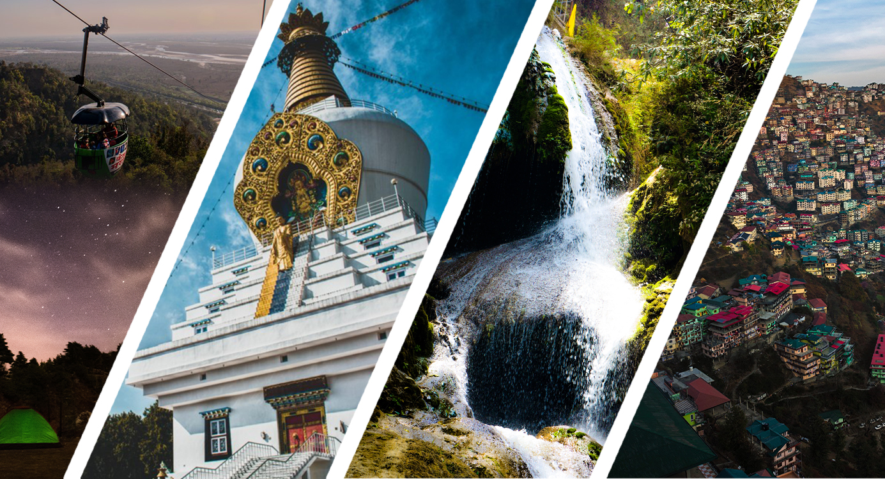

Places to Visit

Here are some beautiful places to visit in Dehradun:
- Mussoorie, also known as the Queen of Hills is one of the most popular hill stations and offers great views of the Himalayan Mountain ranges. It is also the gateway to ancient Hindu shrines.
- Mussoorie also offers many adventurous activities such as paragliding, adventure parks, treks, ziplines and much more.
- Get more information about Mussoorie here VisitMussoorie
.jpg)
- The city is also home to some of the most pretigious Institutes of the Nation.
- The Indian Military Academy : The oldest military academy of India. Established in 1932, the academy trains officers for the Indian army. IMA India
- The Forest Research Insitute : India's top botanical institute, also a National heritage site, famous for its museums featuring forestry from around the world. It is also the leader of scientific forestry in Suth east Asia. FRI India
- The Survey of India : Oldest surveying Institute globally, serving as the national mapping agency of India. The institute is also the first to measure The Mount Everest. Survey of India


- Dehradun offers variety of Indian cuisines with mouth watering North eastern and Indo-chinese food. The city is said to have the best dumplings one can get.
Page 2 of 3
>>> Next page [3]
<<< Prev page [home]